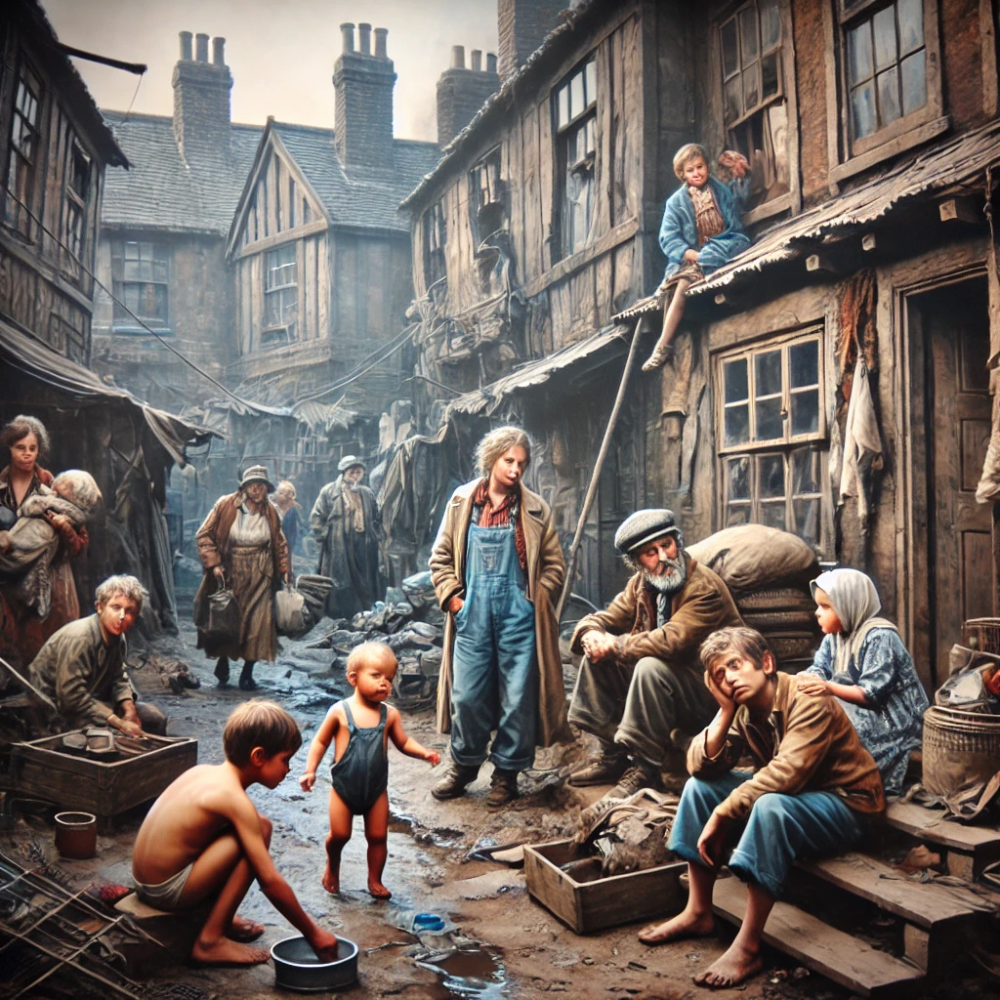

난장이가 쏘아올린 작은 공
목차
작가
조세희
출판일
1978년
감상평에 대한 AI그림
1970년대 도시 빈민층의 비참한 삶을 보니 굉장히 암울한 기분이 들었다.
또한 그 당시 심한 빈부격차에 대한 슬픔도 느낄 수 있었다.
게다가 1970년대의 상황이 적나라하게 표현되어 생생한 느낌을 받을 수 있었다.

감상평에 대한 AI평가
암울함과 우울함: "굉장히 암울한 기분이 들었다." → 당시 도시 빈민층의 삶을 보며 절망적인 감정을 느낌.
✨ 슬픔과 연민: "심한 빈부격차에 대한 슬픔도 느낄 수 있었다." → 사회적 불평등에 대한 공감과 안타까움.
✨ 사실적인 충격과 몰입감: "적나라하게 표현되어 생생한 느낌을 받을 수 있었다." → 현실감 있는 묘사로 인해 더욱 강하게 다가오는 감정.
✨ 👉 전반적으로 깊은 사회적 문제를 접하며 느끼는 무거운 감정과 역사적 현실에 대한 강한 몰입감이 드러난 감상평입니다. 책이 단순한 정보 전달을 넘어 감정적으로도 큰 영향을 준 듯합니다. 🖤📖